Runners
Drone ships
Crewless boats left over from the war in Dex's Wake, and the craft that serve them.
Drone ships
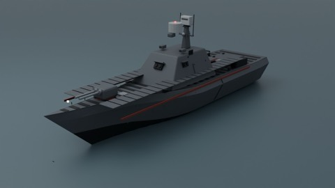
Patrol droneD-01 · 21 mFinal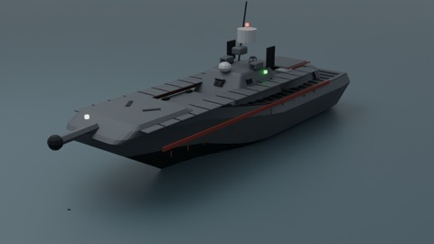
Ram droneD-02 · 13 mFinal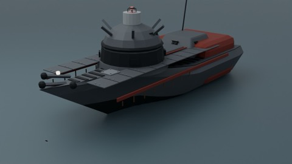
Bomb droneD-03 · 11 mFinal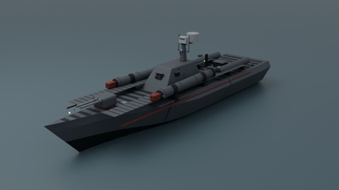
Drone torpedo boatD-04 · 31 mFinal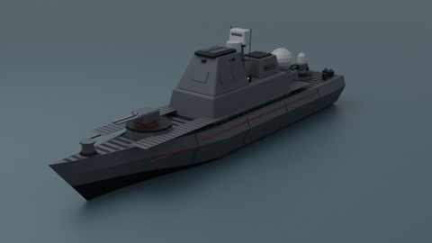
Drone gunboatD-05 · 45 mFinal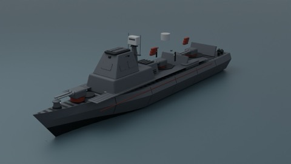
Drone rocket boatD-06 · 55 mFinal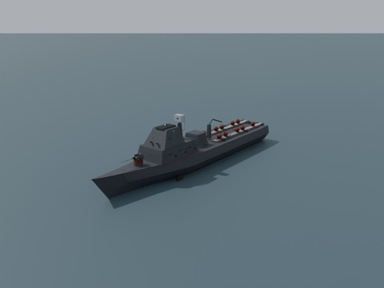
Drone minelayerD-07 · 70 mFinal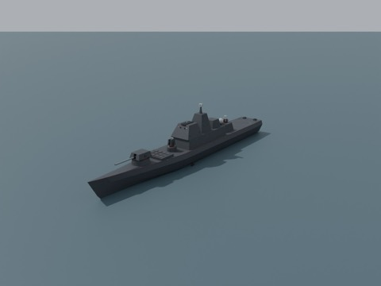
Drone frigateD-08 · 135 mFinal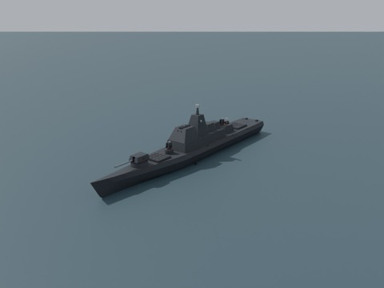
Drone destroyerD-09 · 160 mFinal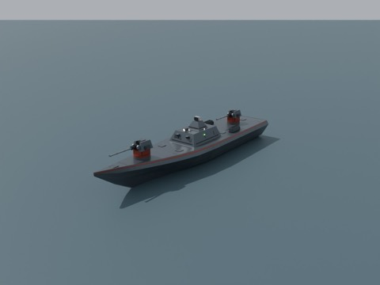
Escort drone boatD-10 · 24 mFinal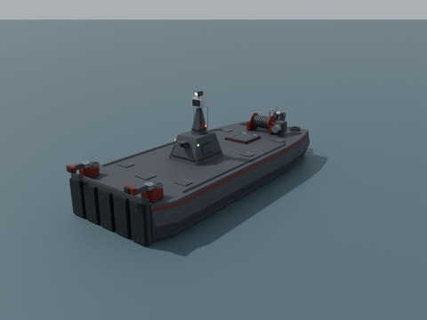
Yard tug droneD-11 · 16 mFinal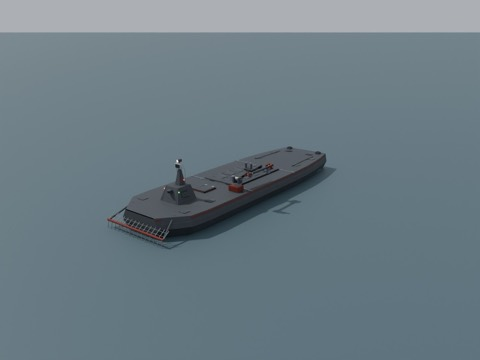
Collector droneD-12 · 28 mFinal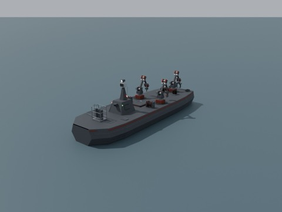
Repair droneD-13 · 20 mFinal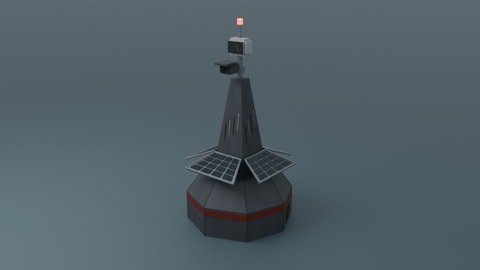
Sensor buoyD-14 · 3 m acrossFinal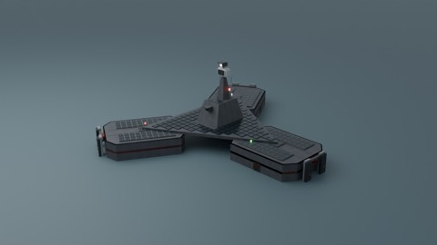
Charging mooringD-15 · 14 m acrossFinal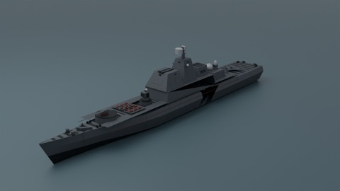
Dead drone hulksD-16 · 21, 45 and 135 mFinal